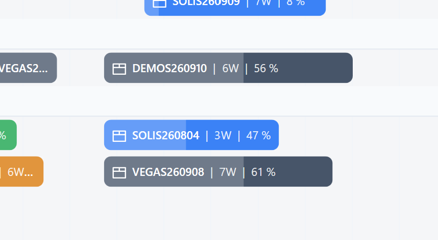

LumenLab
2026Test note-taking and project management for laboratories
About the project
C#
.NET 10
WPF
MVVM
JSON
Features
Quick service setup
Four planning views
Search filters
Groups
Space, used well
Progress as a percentage

Details
Design decisions
Standards are data
Workload per technician
Export
Two versions coexisting